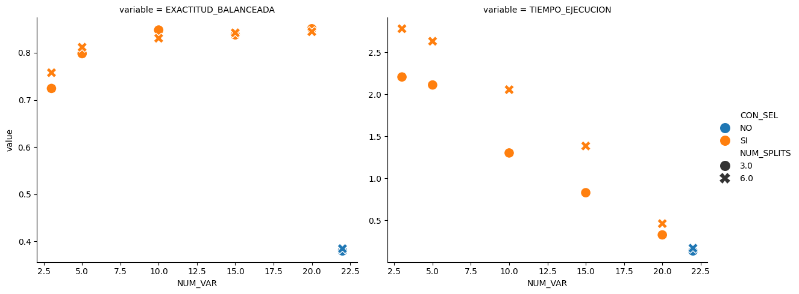
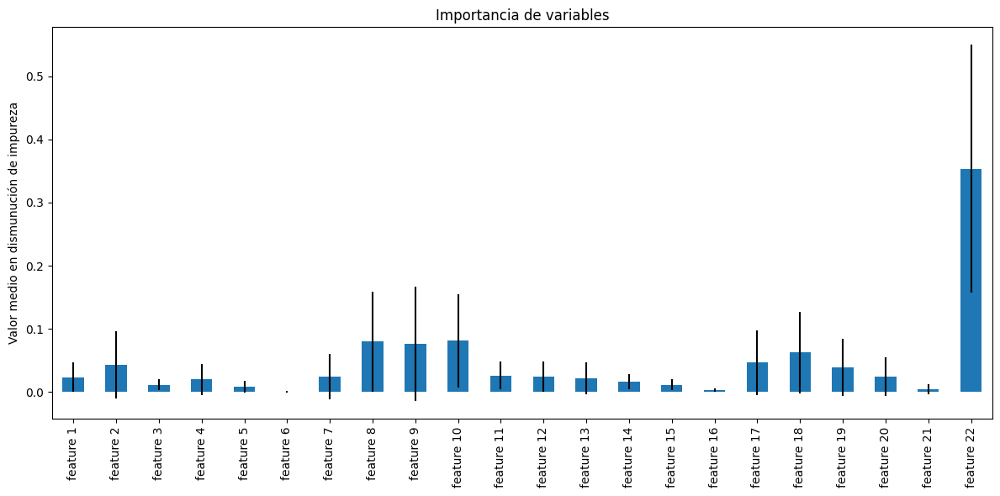

Laboratorio 6 - Parte 1: Reducción de dimensión y Selección de características#
!wget -nc --no-cache -O init.py -q https://raw.githubusercontent.com/jdariasl/Intro_ML_2025/master/init.py
import init; init.init(force_download=False); init.get_weblink()
from local.lib.rlxmoocapi import submit, session
import inspect
session.LoginSequence(endpoint=init.endpoint, course_id=init.course_id, lab_id="L06.01", varname="student");
logging in as julian.ariasl@udea.edu.co... please wait
-------------
using course session introml::udea.pre.20251
success!! you are logged in
-------------
#configuración del laboratorio
# Ejecuta esta celda!
from Labs.commons.utils.lab6 import *
_, x, y = part_1()
Este ejercicio tiene como objetivo implementar varias técnicas de selección de características y usar regresion logística para resolver un problema de clasificación multiclase.
Para el problema de clasificación usaremos la siguiente base de datos: https://archive.ics.uci.edu/ml/datasets/Cardiotocography
Analice la base de datos, sus características, su variable de salida y el contexto del problema.
print('Dimensiones de la base de datos de entrenamiento. dim de x: ' + str(np.shape(x)) + '\tdim de y: ' + str(np.shape(y)))
Dimensiones de la base de datos de entrenamiento. dim de x: (2126, 22) dim de y: (2126,)
print('Dimensiones de la base de datos de entrenamiento. Dim de x: ' + str(np.shape(x)) + '\tDim de y: ' + str(np.shape(y)))
clases, muestras_por_clase = np.unique(y, return_counts=True)
print("las clases son", clases, "el conteo",muestras_por_clase)
Dimensiones de la base de datos de entrenamiento. Dim de x: (2126, 22) Dim de y: (2126,)
las clases son [1 2 3] el conteo [1655 295 176]
Observación para las librerias sklearn
Llamar explícitamente los parametros de las librerias de sklearn (e.j. si se quiere usar el parametro kernel del SVC, se debe llamar SVC(kernel='rbf'))
Ejercicio 1: Entrenamiento sin selección de características#
En nuestro primer ejercicio debemos completar la función para entrenar una SVM para resolver un problema de clasificación. Debemos completar siguiendo las recomendaciones:
Mantener los parámetros sugeridos de la regresión logística.
Asignar el parametro de StratifiedKFold a los splits
Usar la area bajo la curva ROC como medida de error del modulo metrics de sklearn. Tener en cuenta que esta función recibe un score, que es diferente a la predicción (explorar que método debemos usar para nuestro caso de problema y usar un estrategia One vs One).
Esta función la vamos a usar como base para comparar nuestros métodos de selección de características.
#ejercicio de código
def entrenamiento_sin_seleccion_caracteristicas(X, Y, splits):
"""
Función que ejecuta el entrenamiento del modelo sin una selección particular
de las características
Parámetros:
X: matriz con las características
Y: Matriz con la variable objetivo
splits : número de particiones a realizar
Retorna:
1. El modelo entreando
2. El vector de errores
3. El Intervalo de confianza
4. El tiempo de procesamiento
"""
j = 0
kf = StratifiedKFold...
clases = ...
for train_index, test_index in kf.split(X=X, y=Y):
X_train, X_test = X[train_index], X[test_index]
y_train, y_test = Y[train_index], Y[test_index]
# Escalado
scaler = StandardScaler()
X_train = ...
X_test = ...
# Clasificador SVM
clf = SVC(..., random_state=42)
# Entrenamiento el modelo.
# Para calcular el costo computacional
tiempo_i = time.time()
clf.fit(X=X_train,y=y_train)
# Scores para ROC AUC
y_score = clf.decision_function(X_test)
y_test_bin = label_binarize(y_test, classes=clases)
# Scores para ROC AUC
y_score = ...
y_test_bin = label_binarize(y_test, classes=clases)
# Cálculo del AUC con estrategia One-vs-One
auc = roc_auc_score....
Errores[j] = auc
times[j] = time.time() - tiempo_i
j += 1
return ...
## TEACHER
from local.lib.rlxmoocapi import submit, session
session.LoginSequence(endpoint=init.endpoint, course_id=init.course_id, lab_id="L06.01", varname="teacher");
logging in as julian.ariasl@udea.edu.co... please wait
-------------
using course session introml::udea.pre.20251
success!! you are logged in
-------------
## TEACHER DEFINEGRADER
def grader_01(functions, variables, caller_userid):
import numpy as np
import time
from sklearn.model_selection import StratifiedKFold
from sklearn.linear_model import LogisticRegression
from sklearn.preprocessing import StandardScaler, label_binarize
from sklearn.metrics import confusion_matrix, roc_auc_score
from sklearn.svm import SVC
def t_entrenamiento_sin_seleccion_caracteristicas(X, Y, splits):
#Implemetamos la metodología de validación
rendimiento = np.ones(splits)
times = np.ones(splits)
j = 0
kf = StratifiedKFold(n_splits = splits,shuffle=True, random_state=42)
clases = np.unique(Y)
for train_index, test_index in kf.split(X=X, y=Y):
X_train, X_test = X[train_index], X[test_index]
y_train, y_test = Y[train_index], Y[test_index]
# Escalado
scaler = StandardScaler()
X_train = scaler.fit_transform(X_train)
X_test = scaler.transform(X_test)
# Clasificador SVM
clf = SVC(kernel="linear", probability=True, decision_function_shape="ovo", random_state=42)
# Entrenamiento el modelo.
# Para calcular el costo computacional
tiempo_i = time.time()
clf.fit(X=X_train,y=y_train)
# Scores para ROC AUC
y_score = clf.decision_function(X_test)
y_test_bin = label_binarize(y_test, classes=clases)
# Scores para ROC AUC
y_score = clf.decision_function(X_test)
y_test_bin = label_binarize(y_test, classes=clases)
# Cálculo del AUC con estrategia One-vs-One
auc = roc_auc_score(y_test_bin, y_score, multi_class="ovo", average="macro")
rendimiento[j] = auc
times[j] = time.time() - tiempo_i
j += 1
# RENDIMIENTO_VALIDACION, STD_RENDIMIENTO_VALIDACION, TIEMPO_EJECUCION
return clf, np.mean(rendimiento), np.std(rendimiento), np.mean(times)
# retrieve definitions
namespace = locals()
for f in functions.values():
exec(f, namespace)
s_entrenamiento_sin_seleccion_caracteristicas = namespace['entrenamiento_sin_seleccion_caracteristicas']
msg = "testing your code with random data points<br/>"
for _ in range(5):
num_samples = np.random.randint(500) + 20
num_features = np.random.randint(10) + 2
splits = 5 # Número de particiones
X = np.random.randn(num_samples, num_features) # Matriz de características
Y = np.random.choice([0, 1], size=num_samples) # Clases binarias
msg = ""
# Ejecutar la función de referencia y la del usuario
try:
_, t_err, t_ic, t_ex = t_entrenamiento_sin_seleccion_caracteristicas(X, Y, splits)
_, s_err, s_ic, s_ex = s_entrenamiento_sin_seleccion_caracteristicas(X, Y, splits)
except Exception as e:
return 0, f"Error al ejecutar la función: {str(e)}"
if not np.allclose(t_err, s_err, atol=1e-2):
msg += f"Rendimiento esperado: {t_err}, obtenido: {s_err}<br/>"
return 0, msg
if not np.allclose(t_ic, s_ic, atol=1e-2):
msg += f"Desviación estándar esperada: {t_ic}, obtenida: {s_ic}<br/>"
return 0, msg
if not np.allclose(t_ex, s_ex, atol=1e-2):
msg += f"Tiempo esperado: {t_ex}, obtenido: {s_ex}<br/>"
return 0, msg
return 5, msg+'<b>correct</b>'
source_functions_names_01 = ['entrenamiento_sin_seleccion_caracteristicas']
source_variables_names_01 = []
## TEACHER
def entrenamiento_sin_seleccion_caracteristicas(X, Y, splits):
import numpy as np
from sklearn.model_selection import StratifiedKFold
from sklearn.preprocessing import StandardScaler, label_binarize
from sklearn.metrics import confusion_matrix, roc_auc_score
from sklearn.svm import SVC
#Implemetamos la metodología de validación
errores = np.ones(splits)
times = np.ones(splits)
j = 0
kf = StratifiedKFold(n_splits = splits,shuffle=True, random_state=42)
clases = np.unique(Y)
for train_index, test_index in kf.split(X=X, y=Y):
X_train, X_test = X[train_index], X[test_index]
y_train, y_test = Y[train_index], Y[test_index]
# Escalado
scaler = StandardScaler()
X_train = scaler.fit_transform(X_train)
X_test = scaler.transform(X_test)
# Clasificador SVM
clf = SVC(kernel="linear", probability=True, decision_function_shape="ovo", random_state=42)
# Entrenamiento el modelo.
# Para calcular el costo computacional
tiempo_i = time.time()
clf.fit(X=X_train,y=y_train)
# Scores para ROC AUC
y_score = clf.decision_function(X_test)
y_test_bin = label_binarize(y_test, classes=clases)
# Scores para ROC AUC
y_score = clf.decision_function(X_test)
y_test_bin = label_binarize(y_test, classes=clases)
# Cálculo del AUC con estrategia One-vs-One
auc = roc_auc_score(y_test_bin, y_score, multi_class="ovo", average="macro")
errores[j] = auc
times[j] = time.time() - tiempo_i
j += 1
return clf, np.mean(errores), np.std(errores), np.mean(times)
## TEACHER
import inspect
teacher.run_grader_locally("grader_01", source_functions_names_01, source_variables_names_01, locals())
grade: 5
grader message
correct
## TEACHER SETGRADER
import inspect
teacher.set_grader(teacher.course_id, "L06.01", 'T1',
inspect.getsource(grader_01), 'grader_01',
source_functions_names_01, source_variables_names_01)
Registra tu solución en línea
student.submit_task(namespace=globals(), task_id='T1');
#@markdown En sus palabras ¿Cuál es el proceso ejecutado por la función roc_auc_score que calcula la área sobre la curva roc?
respuesta = '' #@param {type:"string"}
Ejercicio 2: Entrenamiento con selección de características#
La siguiente función “wrapper” nos permite hacer una selección de características utilizando la librería recursive feature elimination de Sci-kit Learn.
Esta librería es un método de selección características wrapper, que usa los coeficientes derivados de un estimador entrenado para estimar que características tienen mayor poder predictivo.
Para completar debemos tener en cuenta lo siguiente:
Para el número de características usar el parámetro feature_numbers
Establecer el paso = 1 para ir eliminando las características
Asumir que el estimador se crea externamente de la función
Entender los campos del RFE disponibles despues de entrenarlo para obtener:
La máscara para saber que características fueron seleccionadas
El ranking de las características
Usar como estimador regresión de vectores de soporte (SVR) como estimador
#ejercicio de código
def recursive_feature_elimination_wrapper(estimator, feature_numbers, X,Y):
"""
Esta función es un envoltorio del objeto RFE de sklearn
Parámetros:
estimator: un modelo entregado como parámetro
feature_numbers(int): el número de características a considerar
X (numpy.array): el arreglo numpy de muestras de entrada
Y (numpy.array): el vector de etiquetas correspondiente
Retorna:
El modelo entrenado
La máscara de características seleccionada, array [longitud de caracterisitcas de X]
El ranking de características, array [longitud de caracterisitcas de X]
El objeto RFE entrenado sobre el set reducido de características
El tiempo de ejecución
"""
rfe = ...(estimator=..., n_features_to_select=..., step=...)
tiempo_i = time.time()
rfe.fit...
time_o = time.time()-tiempo_i
feature_mask = rfe...
features_rank = rfe...
estimator = rfe...
return rfe, feature_mask, features_rank, estimator, time_o
## TEACHER DEFINEGRADER
def grader_02(functions, variables, caller_userid):
import numpy as np
import time
from sklearn.linear_model import LogisticRegression
from sklearn.feature_selection import RFE
from sklearn.svm import SVC
def t_recursive_feature_elimination_wrapper(estimator, feature_numbers, X,Y):
rfe = RFE(estimator=estimator , n_features_to_select=feature_numbers , step=1)
tiempo_i = time.time()
rfe.fit(X=X , y= Y)
time_o = time.time()-tiempo_i
feature_mask = rfe.support_
features_rank = rfe.ranking_
estimator = rfe.estimator_
return rfe, feature_mask, features_rank, estimator, time_o
# retrieve definitions
namespace = locals()
for f in functions.values():
exec(f, namespace)
s_recursive_feature_elimination_wrapper = namespace['recursive_feature_elimination_wrapper']
msg = "testing your code with random data points<br/>"
for _ in range(5):
num_samples = np.random.randint(500) + 20
num_features = np.random.randint(10) + 2
X = np.random.randn(num_samples, num_features) # Matriz de características
Y = np.random.choice([0, 1], size=num_samples)
estimator = SVC(kernel="linear") #LogisticRegression(solver="liblinear")
msg = ""
# Ejecutar la función de referencia y la del usuario
try:
_, t_mask, t_rank, t_estimator, t_time = t_recursive_feature_elimination_wrapper(estimator, num_features, X, Y)
_, s_mask, s_rank, s_estimator, s_time = s_recursive_feature_elimination_wrapper(estimator, num_features, X, Y)
except Exception as e:
return 0, f"Error al ejecutar la función: {str(e)}"
if not np.array_equal(t_mask, s_mask):
msg += f"Máscara esperada: {t_mask}, obtenida: {s_mask}<br/>"
return 0, msg
if not np.array_equal(t_rank, s_rank):
msg += f"Ranking esperado: {t_rank}, obtenido: {s_rank}<br/>"
return 0, msg
if not np.allclose(t_time, s_time, atol=1e-2):
msg += f"Tiempo esperado: {t_time}, obtenido: {s_time}<br/>"
return 0, msg
return 5, msg+'<b>correct</b>'
source_functions_names_02 = ['recursive_feature_elimination_wrapper']
source_variables_names_02 = []
## TEACHER
def recursive_feature_elimination_wrapper(estimator, feature_numbers, X,Y):
rfe = RFE(estimator=estimator , n_features_to_select=feature_numbers , step=1)
tiempo_i = time.time()
rfe.fit(X=X , y= Y)
time_o = time.time()-tiempo_i
feature_mask = rfe.support_
features_rank = rfe.ranking_
estimator = rfe.estimator_
return rfe, feature_mask, features_rank, estimator, time_o
## TEACHER
import inspect
teacher.run_grader_locally("grader_02", source_functions_names_02, source_variables_names_02, locals())
grade: 5
grader message
correct
## TEACHER SETGRADER
import inspect
teacher.set_grader(teacher.course_id, "L06.01", 'T2',
inspect.getsource(grader_02), 'grader_02',
source_functions_names_02, source_variables_names_02)
Registra tu solución en línea
student.submit_task(namespace=globals(), task_id='T2');
#@title Preguntas Abierta
#@markdown Explicar ¿Qué diferencia tiene el método implementado con un método que usa un criterio tipo filtro para la selección de características?
respuesta = '' #@param {type:"string"}
Ejercicio 3: Comparación de los resultados del modelo#
Ahora en la siguiente función, vamos a usar la función planteada para realizar experimentos con la selección de características. Para ello:
Utilizar una metodología cross-validation estratificada.
Considerando p características, retorne el modelo entrenado, el vector de errores, el intervalo de confianza y el tiempo de ejecución.
Vamos a retornar un DataFrame con las siguientes columnas:
CON_SEL: indicando si se uso selección de características
NUM_VAR: número de selección de características
NUM_SPLITS: número de particiones realizadas
T_EJECUCION: tiempo de ejecución
EXACTITUD_BALANCEADA
STD_EXACTITUD_BALANCEADA
En la primera fila del dataframe vamos a incluir la evaluación del modelo SVM sin selección de características (usando la función creada en el primer ejercicio) y sin particionar el set de datos.
#ejercicio de código
def experimentar(n_feats, n_sets, X, Y):
"""
Esta función realiza la comparación del desempeño de RFE utilizando diferente
número de feats y particionando el conjunto de datos en diferente número de
subconjuntos
Parámetros:
X (numpy.array), El arreglo numpy de características
Y (numpy.array), El vector de etiquetas
n_feats, Vector de números enteros que indica el número de características
que debe utilizar el modelo
n_sets, Vector de números enteros que indica el número de particiones
Retorna:
- DataFrame con las columnas: DESCRIPCION, T_EJECUCION ERROR_VALIDACION,
y STD_ERROR_VALIDACION
"""
df = pd.DataFrame()
idx = 0
for split_number in n_sets:
#Sin selección de características
# se ignorar las otras salidas
_,err,ic,t_ex = entrenamiento_sin_seleccion_caracteristicas(...)
df.loc[idx,'CON_SEL'] = 'NO'
df.loc[idx,'NUM_VAR'] = X.shape[1]
df.loc[idx,'NUM_SPLITS'] = ...
df.loc[idx,'TIEMPO_EJECUCION'] = ...
df.loc[idx,'EXACTITUD_BALANCEADA'] = ...
df.loc[idx,'EXACTITUD_BALANCEADA'] = ...
idx+=1
print("termina experimentos sin selección")
#Con selección de características
for f in n_feats:
for split_number in n_sets:
#Implemetamos la metodología de validación
Errores = np.ones(split_number)
Score = np.ones(split_number)
times = np.ones(split_number)
kf = ...(n_splits=split_number)
j = 0
for train_index, test_index in kf.split(...,...):
X_train, X_test = X[train_index], X[test_index]
y_train, y_test = Y[train_index], Y[test_index]
scaler = ...
X_train = ...
X_test = ...
#Configure el modelo SVM para que usa un kernel lineal,
#retorne probabilidades, use una estrategia all vs all y
#ajuste la semilla a 0.
clf = SVM...
# se ignorar las otras salidas
rfe, _, _, _, t = recursive_feature_elimination_wrapper...
Errores[j]=...
times[j] = t
j+=1
df.loc[idx,'CON_SEL'] = 'SI'
df.loc[idx,'NUM_VAR'] = f
df.loc[idx,'NUM_SPLITS'] = ...
df.loc[idx, 'TIEMPO_EJECUCION'] = ...
df.loc[idx,'EXACTITUD_BALANCEADA'] = ...
df.loc[idx, 'STD_EXACTITUD_BALANCEADA'] = ...
idx+=1
return df
File "<ipython-input-19-0930fb039012>", line 52
clf = SVM...
^
SyntaxError: invalid syntax
## TEACHER DEFINEGRADER
def grader_03(functions, variables, caller_userid):
import numpy as np
import pandas as pd
import time
from sklearn.linear_model import LogisticRegression
from sklearn.feature_selection import RFE
from sklearn.preprocessing import StandardScaler
from sklearn.model_selection import StratifiedKFold
from sklearn.metrics import confusion_matrix, balanced_accuracy_score
from sklearn.svm import SVC
def t_experimentar(n_feats, n_sets, X, Y):
df = pd.DataFrame()
idx = 0
# Sin selección de características
for split_number in n_sets:
_, err, ic, t_ex = entrenamiento_sin_seleccion_caracteristicas(X=X, Y=Y, splits=split_number)
df.loc[idx, 'CON_SEL'] = 'NO'
df.loc[idx, 'NUM_VAR'] = X.shape[1]
df.loc[idx, 'NUM_SPLITS'] = split_number
df.loc[idx, 'TIEMPO_EJECUCION'] = t_ex
df.loc[idx, 'EXACTITUD_BALANCEADA'] = err
df.loc[idx, 'STD_EXACTITUD_BALANCEADA'] = ic
idx += 1
# Con selección de características
for features in n_feats:
for split_number in n_sets:
rendimiento = np.ones(split_number)
times = np.ones(split_number)
kf = StratifiedKFold(n_splits=split_number)
j = 0
for train_index, test_index in kf.split(X, Y):
X_train, X_test = X[train_index], X[test_index]
y_train, y_test = Y[train_index], Y[test_index]
scaler = StandardScaler()
X_train = scaler.fit_transform(X=X_train)
X_test = scaler.transform(X=X_test)
clf = SVC(kernel="linear", probability=True, decision_function_shape="ovo", random_state=0)
rfe, _, _, _, t = recursive_feature_elimination_wrapper(
estimator=clf,
feature_numbers=features,
X=X_train,
Y=y_train
)
ypred = rfe.predict(X=X_test)
# Evaluación para multiclase usando balanced accuracy
rendimiento[j] = balanced_accuracy_score(y_test, ypred)
times[j] = t
j += 1
df.loc[idx, 'CON_SEL'] = 'SI'
df.loc[idx, 'NUM_VAR'] = features
df.loc[idx, 'NUM_SPLITS'] = split_number
df.loc[idx, 'TIEMPO_EJECUCION'] = np.mean(times)
df.loc[idx, 'EXACTITUD_BALANCEADA'] = np.mean(rendimiento)
df.loc[idx, 'STD_EXACTITUD_BALANCEADA'] = np.std(rendimiento)
idx += 1
return df
# retrieve definitions
namespace = locals()
for f in functions.values():
exec(f, namespace)
s_experimentar = namespace['experimentar']
entrenamiento_sin_seleccion_caracteristicas = namespace['entrenamiento_sin_seleccion_caracteristicas']
recursive_feature_elimination_wrapper = namespace['recursive_feature_elimination_wrapper']
msg = "testing your code with random data points<br/>"
for _ in range(5):
num_samples = np.random.randint(500) + 20
num_features = np.random.randint(10) + 2
n_feats = [1, 2, 3] # número de características seleccionadas
n_sets = [2, 3, 5] # números de splits
X = np.random.randn(num_samples, num_features) # Matriz de características
Y = np.random.choice([0, 1], size=num_samples) # Clases binarias
msg = ""
# Ejecutar la función de referencia y la del usuario
try:
t_df = t_experimentar(n_feats, n_sets, X, Y)
s_df = s_experimentar(n_feats, n_sets, X, Y)
except Exception as e:
return 0, f"Error al ejecutar la función: {str(e)}"
# 1️⃣ Verificar que tengan la misma forma (filas y columnas)
if t_df.shape != s_df.shape:
return 0, f"Error: La forma del DataFrame no coincide.<br/>" \
f"🔹 <b>Esperado:</b> {t_df.shape}<br/>" \
f"🔹 <b>Obtenido:</b> {s_df.shape}<br/>"
# 2️⃣ Verificar que tengan las mismas columnas
missing_cols = set(t_df.columns) - set(s_df.columns)
extra_cols = set(s_df.columns) - set(t_df.columns)
if missing_cols:
return 0, f"Faltan columnas en el resultado del usuario: {missing_cols}."
if extra_cols:
return 0, f"Hay columnas extra en el resultado del usuario: {extra_cols}."
# 3️⃣ Verificar los tipos de datos de las columnas
for column in t_df.columns:
if t_df[column].dtype != s_df[column].dtype:
return 0, f"Error en la columna <b>{column}</b>:<br/>" \
f"🔹 <b>Tipo esperado:</b> {t_df[column].dtype}<br/>" \
f"🔹 <b>Tipo obtenido:</b> {s_df[column].dtype}<br/>"
# 4️⃣ Comparar los valores con una tolerancia del 5%
tolerancia = 0.05
for column in t_df.columns:
if np.issubdtype(t_df[column].dtype, np.number): # Solo comparar columnas numéricas
diff = np.abs(t_df[column] - s_df[column])
max_diff = diff.max()
if (diff > tolerancia).any():
idx_error = diff.idxmax() # Encontrar el índice donde hay mayor diferencia
return 0, f"⚠️ Diferencias significativas en la columna <b>{column}</b>:<br/>" \
f"🔹 <b>Esperado:</b> {t_df[column][idx_error]}<br/>" \
f"🔹 <b>Obtenido:</b> {s_df[column][idx_error]}<br/>" \
msg += "<b>Correcto</b>: La implementación genera el DataFrame esperado.<br/>"
return 5, msg
source_functions_names_03 = ['experimentar','entrenamiento_sin_seleccion_caracteristicas','recursive_feature_elimination_wrapper']
source_variables_names_03 = []
## TEACHER
def experimentar(n_feats, n_sets, X, Y):
import numpy as np
import pandas as pd
import time
from sklearn.linear_model import LogisticRegression
from sklearn.feature_selection import RFE
from sklearn.preprocessing import StandardScaler
from sklearn.model_selection import StratifiedKFold
from sklearn.metrics import confusion_matrix, balanced_accuracy_score
from sklearn.svm import SVC
df = pd.DataFrame()
idx = 0
# Sin selección de características
for split_number in n_sets:
_, err, ic, t_ex = entrenamiento_sin_seleccion_caracteristicas(X=X, Y=Y, splits=split_number)
df.loc[idx, 'CON_SEL'] = 'NO'
df.loc[idx, 'NUM_VAR'] = X.shape[1]
df.loc[idx, 'NUM_SPLITS'] = split_number
df.loc[idx, 'TIEMPO_EJECUCION'] = t_ex
df.loc[idx, 'EXACTITUD_BALANCEADA'] = err
df.loc[idx, 'STD_EXACTITUD_BALANCEADA'] = ic
idx += 1
# Con selección de características
for features in n_feats:
for split_number in n_sets:
rendimiento = np.ones(split_number)
times = np.ones(split_number)
kf = StratifiedKFold(n_splits=split_number)
j = 0
for train_index, test_index in kf.split(X, Y):
X_train, X_test = X[train_index], X[test_index]
y_train, y_test = Y[train_index], Y[test_index]
scaler = StandardScaler()
X_train = scaler.fit_transform(X=X_train)
X_test = scaler.transform(X=X_test)
clf = SVC(kernel="linear", probability=True, decision_function_shape="ovo", random_state=0)
rfe, _, _, _, t = recursive_feature_elimination_wrapper(
estimator=clf,
feature_numbers=features,
X=X_train,
Y=y_train
)
ypred = rfe.predict(X=X_test)
# Evaluación para multiclase usando balanced accuracy
rendimiento[j] = balanced_accuracy_score(y_test, ypred)
times[j] = t
j += 1
df.loc[idx, 'CON_SEL'] = 'SI'
df.loc[idx, 'NUM_VAR'] = features
df.loc[idx, 'NUM_SPLITS'] = split_number
df.loc[idx, 'TIEMPO_EJECUCION'] = np.mean(times)
df.loc[idx, 'EXACTITUD_BALANCEADA'] = np.mean(rendimiento)
df.loc[idx, 'STD_EXACTITUD_BALANCEADA'] = np.std(rendimiento)
idx += 1
return df
## TEACHER
import inspect
teacher.run_grader_locally("grader_03", source_functions_names_03, source_variables_names_03, locals())
grade: 5
grader message
Correcto: La implementación genera el DataFrame esperado.
## TEACHER SETGRADER
import inspect
teacher.set_grader(teacher.course_id, "L06.01", 'T3',
inspect.getsource(grader_03), 'grader_03',
source_functions_names_03, source_variables_names_03)
Registra tu solución en línea
student.submit_task(namespace=globals(), task_id='T3');
Ejecuta la celda de codigo para realizar los experimentos
dfr = experimentar(n_feats = [3, 5, 10,15,20], n_sets = [3,6], X= x, Y=y)
Utilizando el DataFrame definido en la función anterior, retorne la mejor configuración del “Número de características” que resultó ,as beneficiosa. Identifique en términos de “Costo computacional” y “Eficiencia del Modelo”.
# podemos cambiar las forma de organizar el df para observar qué diferencias hay
# cuando se cambia la prioridad de alguno de los dos parámetros
dfr.sort_values(['EXACTITUD_BALANCEADA', "TIEMPO_EJECUCION"], ascending=[False, True])
| CON_SEL | NUM_VAR | NUM_SPLITS | TIEMPO_EJECUCION | EXACTITUD_BALANCEADA | STD_EXACTITUD_BALANCEADA | |
|---|---|---|---|---|---|---|
| 10 | SI | 20.0 | 3.0 | 0.326662 | 0.850994 | 0.043400 |
| 6 | SI | 10.0 | 3.0 | 1.301425 | 0.848227 | 0.043263 |
| 11 | SI | 20.0 | 6.0 | 0.460530 | 0.844635 | 0.064085 |
| 9 | SI | 15.0 | 6.0 | 1.384228 | 0.842403 | 0.061451 |
| 8 | SI | 15.0 | 3.0 | 0.828572 | 0.837961 | 0.044207 |
| 7 | SI | 10.0 | 6.0 | 2.054654 | 0.830788 | 0.086155 |
| 5 | SI | 5.0 | 6.0 | 2.630600 | 0.811788 | 0.127368 |
| 4 | SI | 5.0 | 3.0 | 2.110540 | 0.798087 | 0.100780 |
| 3 | SI | 3.0 | 6.0 | 2.779737 | 0.757735 | 0.118689 |
| 2 | SI | 3.0 | 3.0 | 2.205654 | 0.724338 | 0.098574 |
| 1 | NO | 22.0 | 6.0 | 0.168346 | 0.384595 | 0.017066 |
| 0 | NO | 22.0 | 3.0 | 0.135634 | 0.379734 | 0.005171 |
Veamos como se relaciona el tiempo de ejecución con los splits y la selección de caracteristicas
import seaborn as sns
d_toplot = pd.melt(dfr,id_vars=['CON_SEL', 'NUM_VAR', 'NUM_SPLITS'], value_vars=['EXACTITUD_BALANCEADA', 'TIEMPO_EJECUCION'])
sns.relplot(data = d_toplot,
x = 'NUM_VAR',
y = 'value',
hue = 'CON_SEL',
style = 'NUM_SPLITS',
col = 'variable',
kind='scatter',
facet_kws = {'sharey' : False},
aspect=1.2,
s=150)
plt.show()

Ahora use el mejor modelo para entrenar nuevamente el modelo y saber que caracteristicas tienen el mejor poder predictivo. Use el # de caracteristicas que resulto mejor cuando se realizo alguna selección de caracteristicas.
# observemos el mejor modelo cuando se realizo selección de caracteristicas
dfr[dfr['CON_SEL'] == 'SI'].sort_values(["EXACTITUD_BALANCEADA"], ascending=[False]).head(2)
| CON_SEL | NUM_VAR | NUM_SPLITS | TIEMPO_EJECUCION | EXACTITUD_BALANCEADA | STD_EXACTITUD_BALANCEADA | |
|---|---|---|---|---|---|---|
| 10 | SI | 20.0 | 3.0 | 0.326662 | 0.850994 | 0.043400 |
| 6 | SI | 10.0 | 3.0 | 1.301425 | 0.848227 | 0.043263 |
Ahora, completa la siguiente celda de código, para incluir la selección de características, con el número encontrado anteriormente
clf = SVC(...)#Use la misma configuración establecida en la anterior función experimentar
rfe, feature_mask, _, _, _ = recursive_feature_elimination_wrapper(clf, 10 , x,y)
mask_explicada = "\n".join([f"feature {i+1} : {m}" for i,m in zip(range(x.shape[1]), feature_mask)])
print(f"Esta es la máscara (debería contener solo valores True y False) \n {mask_explicada}")
Esta es la máscara (debería ser solo valores True y False)
feature 1 : True
feature 2 : True
feature 3 : False
feature 4 : False
feature 5 : True
feature 6 : False
feature 7 : True
feature 8 : False
feature 9 : True
feature 10 : False
feature 11 : False
feature 12 : False
feature 13 : False
feature 14 : False
feature 15 : True
feature 16 : True
feature 17 : False
feature 18 : True
feature 19 : False
feature 20 : False
feature 21 : True
feature 22 : True
Recordemos el concepto de importancia de variables de los metodos basados en arboles.
El siguiente código implementa el cálculo de la importancia de variables en nuestro problema.
# entrenar random forest
from sklearn.ensemble import RandomForestClassifier
feature_names = [f"feature {i+1}" for i in range(x.shape[1])]
forest = RandomForestClassifier(random_state=0)
forest.fit(x, y)
#obtener la importnacia de variables
importances = forest.feature_importances_
std = np.std([tree.feature_importances_ for tree in forest.estimators_], axis=0)
# Graficar las importancia
fig, ax = plt.subplots(figsize = (12,6))
forest_importances = pd.Series(importances, index=feature_names)
forest_importances.plot.bar(yerr=std, ax=ax)
ax.set_title("Importancia de variables")
ax.set_ylabel("Valor medio en dismunución de impureza")
fig.tight_layout()

#@title Pregunta Abierta
#@markdown ¿Son consistentes los resultados de los métodos?
respuesta = '' #@param {type:"string"}
# completa con el mejor número de características
from sklearn.model_selection import train_test_split
from sklearn.pipeline import Pipeline
from sklearn.metrics import confusion_matrix
BEST_NUM_CARACTERISTICAS = 10
X_train, X_test, y_train, y_test = train_test_split(x, y, test_size=0.2, random_state=42)
selector = RFE(estimator= LogisticRegression(),
n_features_to_select=BEST_NUM_CARACTERISTICAS ,
step=1)
estimators = [('normalización', StandardScaler()),
('Selección', selector),
('Clasificador', LogisticRegression()),
]
pipe_selector = Pipeline(estimators)
pipe_selector.fit(X=X_train, y=y_train)
# se puede usar para predecir:
confusion_matrix(y_true = y_test , y_pred = pipe_selector.predict(X=X_test), normalize='true').ravel()
array([0.97897898, 0.01201201, 0.00900901, 0.09375 , 0.84375 ,
0.0625 , 0.10344828, 0.17241379, 0.72413793])
## TEACHER
# --- CREATE or OVERWRITE STUDENTS NOTEBOOK ---
import init
from local.lib.rlxmoocapi import utils
student_notebook_fname = utils.convert_this_notebook_to_student()
WARNING: Ignoring invalid distribution -ensorflow (/Users/julian/opt/anaconda3/envs/tensorflow/lib/python3.9/site-packages)
WARNING: Ignoring invalid distribution -ensorflow (/Users/julian/opt/anaconda3/envs/tensorflow/lib/python3.9/site-packages)
Requirement already satisfied: ipynbname in /Users/julian/opt/anaconda3/envs/tensorflow/lib/python3.9/site-packages (2024.1.0.0)
Requirement already satisfied: ipykernel in /Users/julian/opt/anaconda3/envs/tensorflow/lib/python3.9/site-packages (from ipynbname) (6.19.3)
Requirement already satisfied: debugpy>=1.0 in /Users/julian/opt/anaconda3/envs/tensorflow/lib/python3.9/site-packages (from ipykernel->ipynbname) (1.6.4)
Requirement already satisfied: psutil in /Users/julian/opt/anaconda3/envs/tensorflow/lib/python3.9/site-packages (from ipykernel->ipynbname) (5.9.4)
Requirement already satisfied: tornado>=6.1 in /Users/julian/opt/anaconda3/envs/tensorflow/lib/python3.9/site-packages (from ipykernel->ipynbname) (6.2)
Requirement already satisfied: jupyter-client>=6.1.12 in /Users/julian/opt/anaconda3/envs/tensorflow/lib/python3.9/site-packages (from ipykernel->ipynbname) (7.4.8)
Requirement already satisfied: nest-asyncio in /Users/julian/opt/anaconda3/envs/tensorflow/lib/python3.9/site-packages (from ipykernel->ipynbname) (1.5.6)
Requirement already satisfied: pyzmq>=17 in /Users/julian/opt/anaconda3/envs/tensorflow/lib/python3.9/site-packages (from ipykernel->ipynbname) (24.0.1)
Requirement already satisfied: matplotlib-inline>=0.1 in /Users/julian/opt/anaconda3/envs/tensorflow/lib/python3.9/site-packages (from ipykernel->ipynbname) (0.1.6)
Requirement already satisfied: traitlets>=5.4.0 in /Users/julian/opt/anaconda3/envs/tensorflow/lib/python3.9/site-packages (from ipykernel->ipynbname) (5.8.0)
Requirement already satisfied: comm>=0.1.1 in /Users/julian/opt/anaconda3/envs/tensorflow/lib/python3.9/site-packages (from ipykernel->ipynbname) (0.2.2)
Requirement already satisfied: packaging in /Users/julian/opt/anaconda3/envs/tensorflow/lib/python3.9/site-packages (from ipykernel->ipynbname) (24.2)
Requirement already satisfied: appnope in /Users/julian/opt/anaconda3/envs/tensorflow/lib/python3.9/site-packages (from ipykernel->ipynbname) (0.1.3)
Requirement already satisfied: ipython>=7.23.1 in /Users/julian/opt/anaconda3/envs/tensorflow/lib/python3.9/site-packages (from ipykernel->ipynbname) (8.7.0)
Requirement already satisfied: pexpect>4.3 in /Users/julian/opt/anaconda3/envs/tensorflow/lib/python3.9/site-packages (from ipython>=7.23.1->ipykernel->ipynbname) (4.8.0)
Requirement already satisfied: backcall in /Users/julian/opt/anaconda3/envs/tensorflow/lib/python3.9/site-packages (from ipython>=7.23.1->ipykernel->ipynbname) (0.2.0)
Requirement already satisfied: decorator in /Users/julian/opt/anaconda3/envs/tensorflow/lib/python3.9/site-packages (from ipython>=7.23.1->ipykernel->ipynbname) (5.1.1)
Requirement already satisfied: prompt-toolkit<3.1.0,>=3.0.11 in /Users/julian/opt/anaconda3/envs/tensorflow/lib/python3.9/site-packages (from ipython>=7.23.1->ipykernel->ipynbname) (3.0.36)
Requirement already satisfied: jedi>=0.16 in /Users/julian/opt/anaconda3/envs/tensorflow/lib/python3.9/site-packages (from ipython>=7.23.1->ipykernel->ipynbname) (0.18.2)
Requirement already satisfied: pygments>=2.4.0 in /Users/julian/opt/anaconda3/envs/tensorflow/lib/python3.9/site-packages (from ipython>=7.23.1->ipykernel->ipynbname) (2.19.1)
Requirement already satisfied: stack-data in /Users/julian/opt/anaconda3/envs/tensorflow/lib/python3.9/site-packages (from ipython>=7.23.1->ipykernel->ipynbname) (0.6.2)
Requirement already satisfied: pickleshare in /Users/julian/opt/anaconda3/envs/tensorflow/lib/python3.9/site-packages (from ipython>=7.23.1->ipykernel->ipynbname) (0.7.5)
Requirement already satisfied: entrypoints in /Users/julian/opt/anaconda3/envs/tensorflow/lib/python3.9/site-packages (from jupyter-client>=6.1.12->ipykernel->ipynbname) (0.4)
Requirement already satisfied: python-dateutil>=2.8.2 in /Users/julian/opt/anaconda3/envs/tensorflow/lib/python3.9/site-packages (from jupyter-client>=6.1.12->ipykernel->ipynbname) (2.8.2)
Requirement already satisfied: jupyter-core>=4.9.2 in /Users/julian/opt/anaconda3/envs/tensorflow/lib/python3.9/site-packages (from jupyter-client>=6.1.12->ipykernel->ipynbname) (5.1.0)
Requirement already satisfied: parso<0.9.0,>=0.8.0 in /Users/julian/opt/anaconda3/envs/tensorflow/lib/python3.9/site-packages (from jedi>=0.16->ipython>=7.23.1->ipykernel->ipynbname) (0.8.3)
Requirement already satisfied: platformdirs>=2.5 in /Users/julian/opt/anaconda3/envs/tensorflow/lib/python3.9/site-packages (from jupyter-core>=4.9.2->jupyter-client>=6.1.12->ipykernel->ipynbname) (2.6.0)
Requirement already satisfied: ptyprocess>=0.5 in /Users/julian/opt/anaconda3/envs/tensorflow/lib/python3.9/site-packages (from pexpect>4.3->ipython>=7.23.1->ipykernel->ipynbname) (0.7.0)
Requirement already satisfied: wcwidth in /Users/julian/opt/anaconda3/envs/tensorflow/lib/python3.9/site-packages (from prompt-toolkit<3.1.0,>=3.0.11->ipython>=7.23.1->ipykernel->ipynbname) (0.2.5)
Requirement already satisfied: six>=1.5 in /Users/julian/opt/anaconda3/envs/tensorflow/lib/python3.9/site-packages (from python-dateutil>=2.8.2->jupyter-client>=6.1.12->ipykernel->ipynbname) (1.16.0)
Requirement already satisfied: asttokens>=2.1.0 in /Users/julian/opt/anaconda3/envs/tensorflow/lib/python3.9/site-packages (from stack-data->ipython>=7.23.1->ipykernel->ipynbname) (2.2.1)
Requirement already satisfied: executing>=1.2.0 in /Users/julian/opt/anaconda3/envs/tensorflow/lib/python3.9/site-packages (from stack-data->ipython>=7.23.1->ipykernel->ipynbname) (1.2.0)
Requirement already satisfied: pure-eval in /Users/julian/opt/anaconda3/envs/tensorflow/lib/python3.9/site-packages (from stack-data->ipython>=7.23.1->ipykernel->ipynbname) (0.2.2)
WARNING: Ignoring invalid distribution -ensorflow (/Users/julian/opt/anaconda3/envs/tensorflow/lib/python3.9/site-packages)
NOTEBOOK name is lab6_parte1--XX--TEACHER--XX.ipynb
student notebook writen to 'lab6_parte1.ipynb'
WARNING: Ignoring invalid distribution -ensorflow (/Users/julian/opt/anaconda3/envs/tensorflow/lib/python3.9/site-packages)
WARNING: Ignoring invalid distribution -ensorflow (/Users/julian/opt/anaconda3/envs/tensorflow/lib/python3.9/site-packages)
WARNING: Ignoring invalid distribution -ensorflow (/Users/julian/opt/anaconda3/envs/tensorflow/lib/python3.9/site-packages)